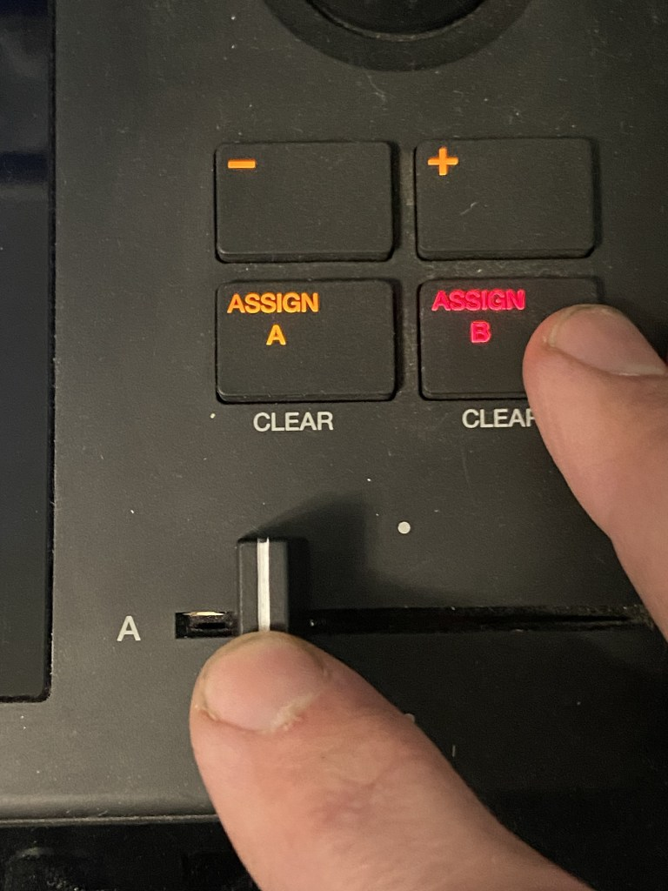
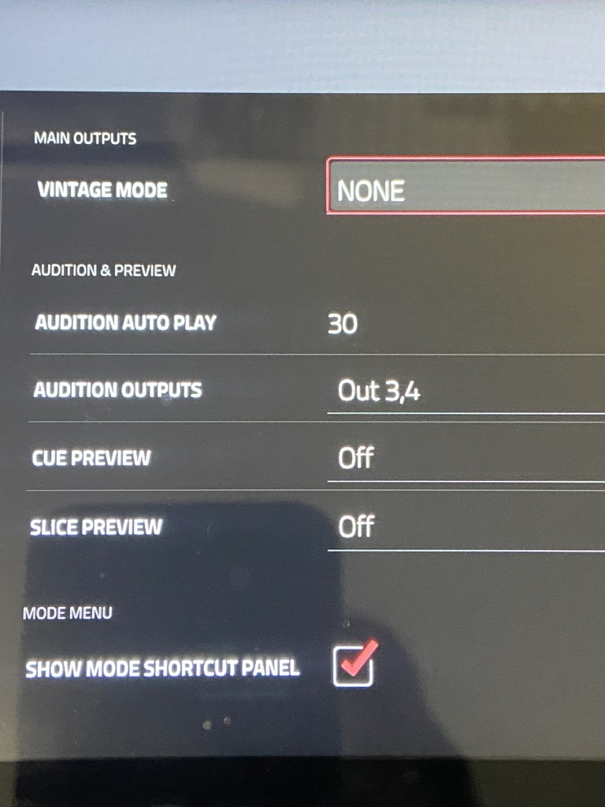
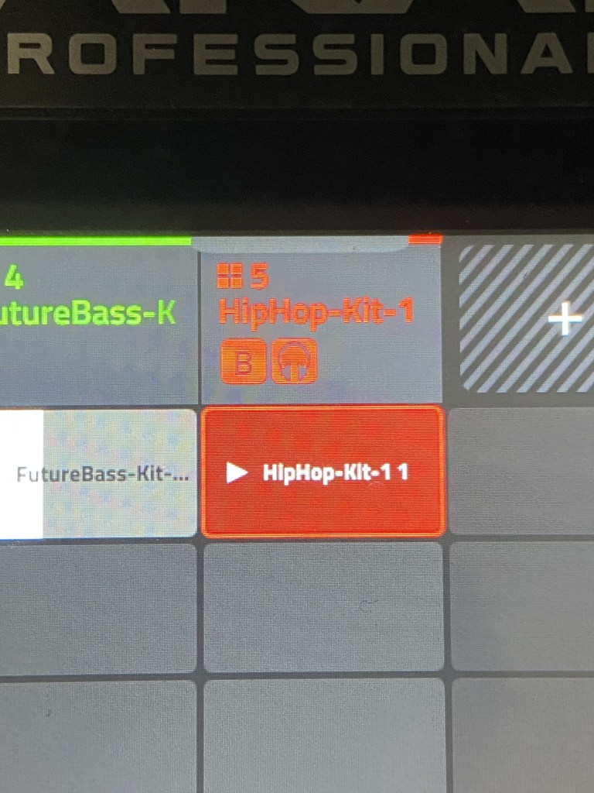
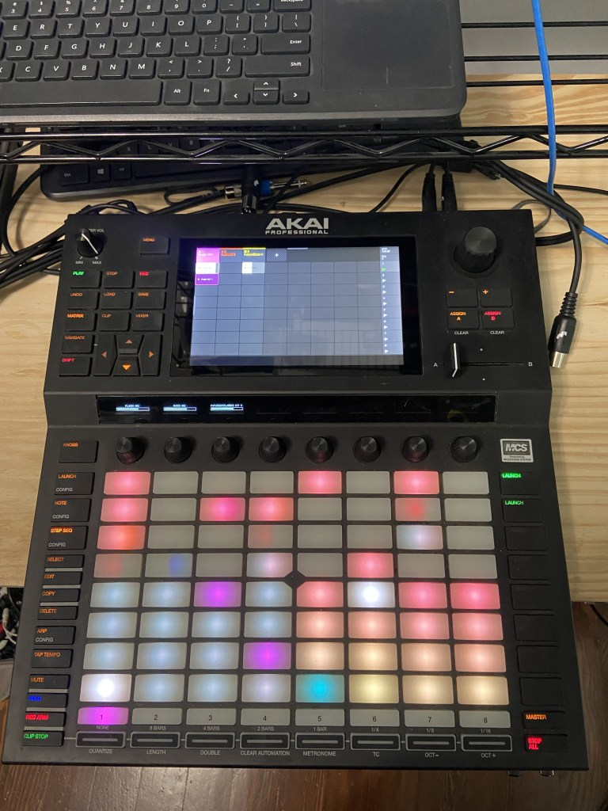

Live workflow on the Akai Force
I’m doing an obligatory post on working through issues with the Akai Force. As you know my approach for grooveboxes centers around building up tracks from scratch live without stopping the transport. This makes some older grooveboxes choke because you have to stop the transport every time you add a track load a sound. This is the problem with boxes like the MC303. I will be writing up a post about that soon.
Setting up the Force requires a few things to get set up the way I want. First is to enable cue outputs so that previwing sounds goes out through the headphones. This is done by a settings panel.
Once this is set up previewing new sounds only goes out through the headphones and outputs 3/4. It doesn’t affect the playing tracks when in cue mode though. Setting up cue on a track does send it out through the headphones but it doesn’t mute the normal outputs on 1/2. There might be a setting that I’m missing to enable this.
So my workflow is to add a new track and immediately assign it to scene B. I’m working in scene A with the fader all the way to the left. Then I can work with the new track in the headphones then when I’m ready I can cut over to it and un-assign it from the scene.
Each time I get a groovebox I have to figure out some kind of live workflow and there are always surprises and workarounds even with the venerable Octatrack.

Hold down “Assign B” and hit the track button to assign to scene “B”. Normally working in scene A so you won’t hear the track out the main outputs but you can hear it in the headphones. The view of the track shows icons for “B” and cue (the headphone icon).
The main “general” settings page is where you can set the audition outputs to 3/4 so the kit and instrument audition sounds don’t go out to the main outs. There doesn’t seem to be a way to mute cued tracks though.



The machine is huge in real life. It’s great that it has 2 XLR inputs but that comes at a cost.